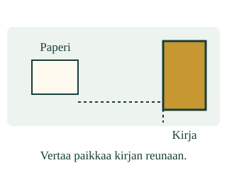

Liikkuiko lehti?
Aava katsoo lehteä ja sen vieressä olevaa kiveä. Mistä hän huomaa, liikkuuko lehti?
Seuraan kohteen paikkaa koko esityksen ajan.
Katso paikan muuttumista
Aseta paperipala pöydälle ja viereen paikallaan pysyvä kirja. Aikuinen siirtää paperia hitaasti; kirja jää paikalleen. Paperi on nyt eri kohdassa kirjaan nähden. Näit liikettä. Voit seurata myös pelkkää pöydällä liikkuvaa esinettä itse liikkumatta.
Ruudun mallissa kivi tai pöytämerkki pysyy paikallaan. Kamera ei liiku. Seuraa samaa kohdetta suhteessa sen omaan merkkiin.
Katso ensin tapahtuma
Mallihavainto: seuraa paikan muutosta.
Tapahtuma A
Voiko kohde liikkua ja palata alkuun? Tutki koko tapahtuma.
Käynnistä esitys. Ilman JavaScriptiä voit tehdä yllä kuvatun paperikokeilun aikuisen kanssa.
Kokeile havaintoasi
Oliko kohde missään vaiheessa eri paikassa kiinteään merkkiin nähden?
Katso tapahtumaa ja valitse vastaukset.
Apua paikan seuraamiseen
Valitse yksi kohde. Missä se on omaan kiveensä tai pöytämerkkiinsä nähden? Pysäytä, jatka ja katso tarvittaessa alusta. Sama paikka alussa ja lopussa ei kerro, missä kohde kävi välissä. Vastaaminen ei vaadi kohteiden napauttamista tai ääneen puhumista.
Uusi tilanne: paperiveneet
Uusi tilanne
Valitse paperiveneiden tapahtuma painikkeella Toinen tapahtuma. Pöytämerkit pysyvät paikallaan. Voit huomata paikan muuttumisen, vaikka kohde ja ympäristö ovat toiset. Kokeile myös tapahtumat, joissa molemmat liikkuvat tai kumpikaan ei liiku.
Mitä esimerkeistä huomataan?
Esimerkki: kohti kiveä
Ensimmäisessä tapahtumassa ylempi lehti siirtyy kiveä kohti. Sen paikka kiveen nähden muuttuu. Alempi pysyy koko esityksen ajan samassa kohdassa. Liikkumista voi huomata vertaamalla paikkaa paikallaan pysyvään kohteeseen.
Esimerkki: takaisin alkuun
Toisessa tapahtumassa ylempi lehti käy kauempana ja palaa alkuun. Näit sen välissä toisessa kohdassa. Se liikkui, vaikka alku- ja loppupaikka ovat samat. Pelkistä kahdesta samanlaisesta alku- ja loppukuvasta ei voi päätellä, ettei välillä liikuttu.
Ansakohta: muuttuva väri
Toisen tapahtuman alempi lehti vaihtaa mallissa väriä. Sen paikka ei muutu. Pelkkä värin vaihtuminen ei ole paikan muuttumista. Väri vaihtuu tässä vain, jotta voimme tutkia eroa ulkonäön ja paikan muutoksen välillä.

Lisätutkimus
Siirrä paperipalaa kirjan vieressä ensin kauemmas ja sitten takaisin. Toinen katsoo vain alkua ja loppua, toinen koko tapahtumaa. Mitä kumpikin voi varmasti kertoa? Kokeilun voi näyttää aikuinen.
Opettajalle: tuki ja rajat
Vuosiluokat 1–2. Vaadittu esitieto SCI-ENV-OBSERVE-01. Taitoa palautetaan havainnon ja mahdollisen selityksen erolla. Aikuinen saa lukea ohjeet; oppilas voi osoittaa. Sekunteja, metrejä, nopeutta tai liikkeen syytä ei lasketa eikä kysytä.
Malli esittää ennalta määrättyä paikan muutosta. Se ei kuvaa veden virtauksia tai todista, mikä aiheutti liikkeen. Kameran ja vertailumerkkien paikka säilyy. Paikallaan olevan kohteen kuvassa ei ole koristeellista keinuntaa. Esitys alkaa vain käynnistettäessä; sen voi pysäyttää ja toistaa tai tutkia askelittain.
Offline: käytä paperipalaa ja kirjaa turvallisesti pöydällä. Ei tarvetta mennä veden äärelle. Havainnoi erikseen oppilaan todellista katsomista ja perustelua. Ruudun vastaukset eivät todista, että koko esitys katsottiin tai että fyysinen havainnointi onnistuu itsenäisesti.
Palaute koskee vain mallin tapahtumia. Ei pisteitä, tallennusta, palkintoja tai muodollista hallintanäyttöä. Syiden ja nopeuden tutkiminen kuuluu muihin tavoitteisiin. Tämän kuvan avulla ei arvioida näköä, lukusujuvuutta tai pysyvää osaamista.
Lopuksi
Näytä kohta, jossa paikka muuttuu. Miksi sama alku- ja loppupaikka ei aina riitä vastaukseksi?